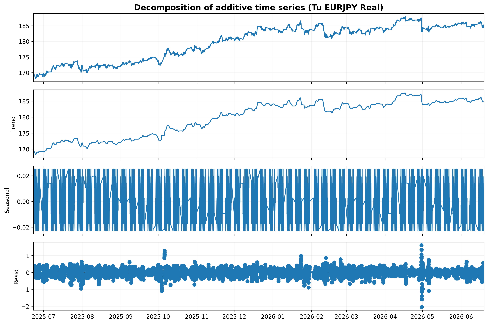
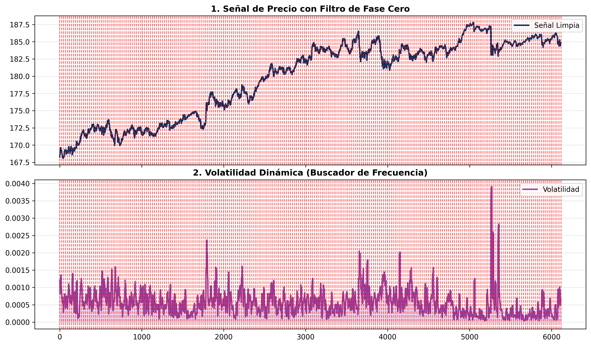
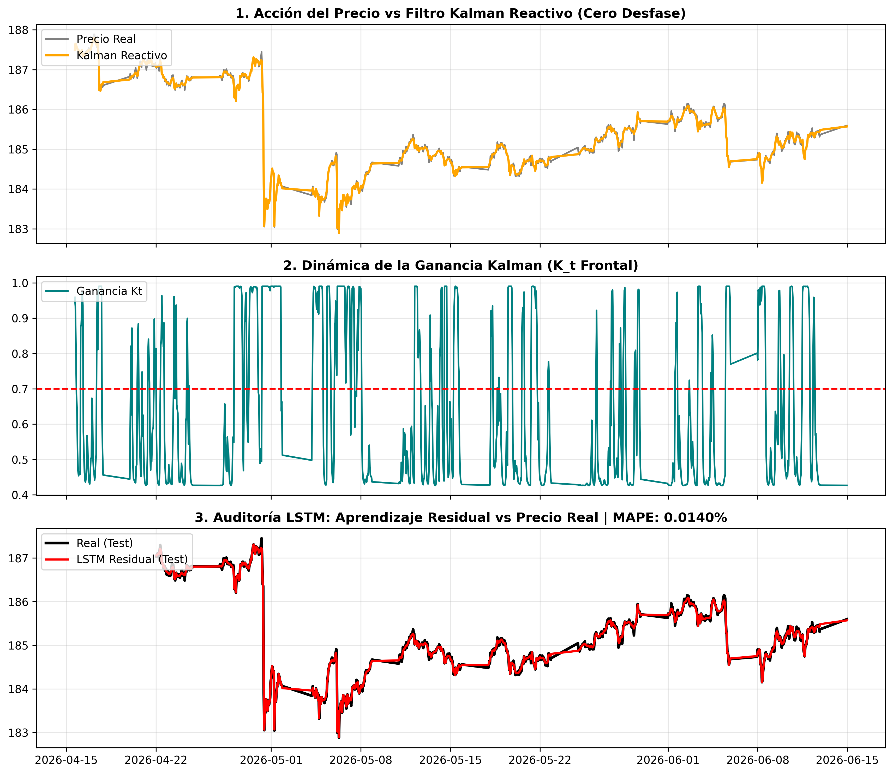
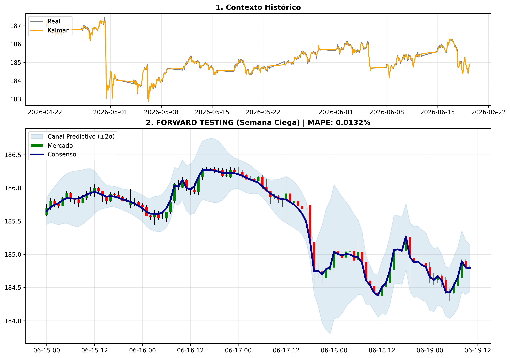
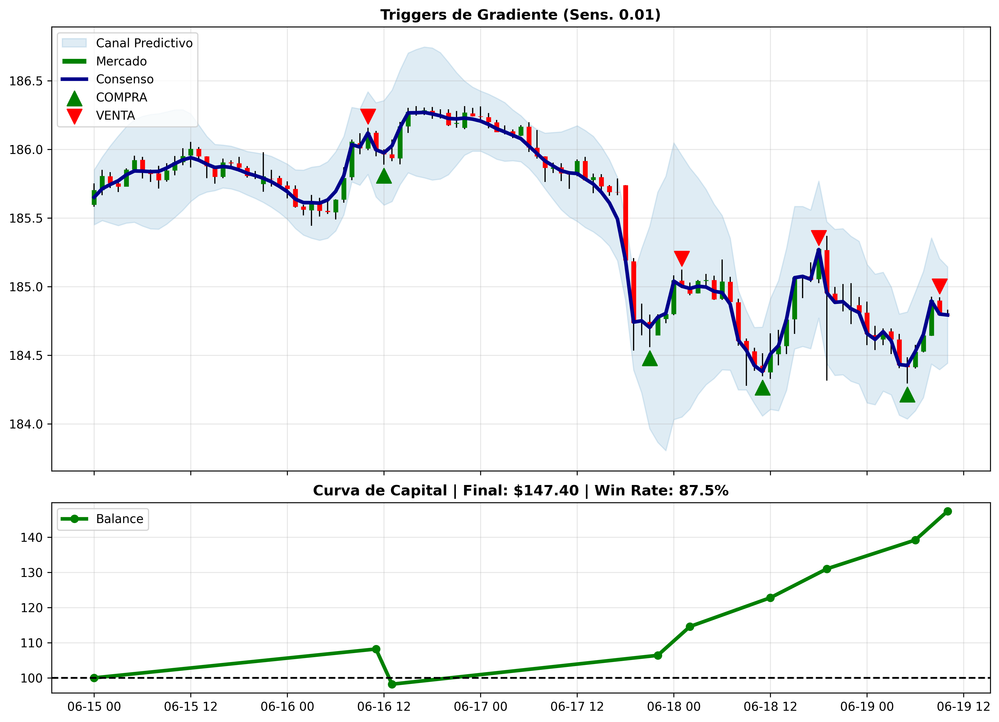

Arquitectura Híbrida de Predicción de Series Temporales Financieras: Filtro de Kalman Adaptativo de Fase Cero combinado con Red LSTM Dual-Head para la estimación del par de divisas EUR/JPY en temporalidad H1
Sede Manizales · Facultad de Ingeniería y Arquitectura
Junio 2026
Este trabajo presenta un sistema de predicción financiera de dos etapas para el par EUR/JPY H1. En la primera etapa, un Filtro de Kalman Adaptativo Bidireccional (Zero-Lag) compilado con Numba/JIT elimina el desfase temporal y separa tendencia de residuo microestructural. En la segunda, una Red LSTM Dual-Head aprende simultáneamente el residuo y la volatilidad local. La reconstrucción genera además un canal de confianza gaussiano (±2σ). El backtesting sobre semana forward-test obtiene Win Rate 83.3% y retorno neto +31% sobre $100 USD de capital inicial.
I. Introducción
Visión General del Sistema
Los mercados de divisas exhiben dinámicas no lineales y no estacionarias. El enfoque propuesto descompone el problema en cuatro etapas encadenadas: adquisición de datos, filtrado y descomposición de la señal, aprendizaje residual con LSTM y generación de señales operativas.
Pipeline de Procesamiento
Adquisición
H1 yfinance
Kalman
Zero-Lag JIT
Descomposición
Aditiva + Ciclos
Feature Eng.
Residuo · StdDev
LSTM
Dual-Head
Predicción
±2σ · Backtesting
Formulación Matemática del Problema
Sea \(y[n]\) el precio de cierre del par EUR/JPY a la hora \(n\). El sistema lo descompone en:
| Símbolo | Nombre | Dominio / Rango | Descripción física |
|---|---|---|---|
| \(y[n]\) | Precio observado | \(\mathbb{R}^+\) | Precio de cierre real del par EUR/JPY en la hora \(n\), con ruido de mercado |
| \(s[n]\) | Tendencia suavizada | \(\mathbb{R}^+\) | Componente de tendencia estimada por el Filtro de Kalman Bidireccional Zero-Lag |
| \(r[n]\) | Residuo microestructural | \(\mathbb{R}\) | Desviación del precio real respecto a la tendencia; objetivo de aprendizaje de la LSTM |
| \(\varepsilon[n]\) | Ruido blanco irreducible | \(\mathcal{N}(0,\sigma^2)\) | Componente estocástica no predecible; su varianza es estimada por el cabezal de volatilidad |
La predicción reconstruida para el horizonte \(n+1\):
II. Adquisición de Datos
Módulo data_prep.py — Descarga y Partición Cronológica Estricta
El módulo descarga 12 meses de datos horarios del par EUR/JPY desde Yahoo Finance y aplica una partición cronológica estricta alineada a lunes, previniendo cualquier fuga de información (data leakage) hacia el conjunto de prueba.
La división se realiza por semanas completas, nunca por porcentaje aleatorio. La semana en curso se aisla completamente y jamás se expone al entrenamiento ni a los escaladores de normalización.
# PASO 2 — Descarga de datos crudos H1 ticker_forex = "EURJPY=X" df_raw = yf.download(ticker_forex, period="1y", interval="1h") df_raw.reset_index(inplace=True) df_raw.columns = [col.lower() for col in df_raw.columns] # PASO 3 — Partición cronológica alineada al lunes df_raw['time'] = pd.to_datetime(df_raw['time']).dt.tz_localize(None) ultima_fecha = df_raw['time'].max() dias_desde_lunes = ultima_fecha.weekday() # 0=Lun … 6=Dom lunes_actual = (ultima_fecha - pd.Timedelta(days=dias_desde_lunes) ).replace(hour=0, minute=0, second=0) # Corte limpio: historial vs. semana actual (NUNCA se mezclan) df_historico = df_raw[df_raw['time'] < lunes_actual].copy() df_semana_actual = df_raw[df_raw['time'] >= lunes_actual].copy() # PASO 4 — Exportación de los tres datasets df_historico.to_csv("EURJPY_H1_Hist_Semanas_Completas.csv", index=False) df_semana_actual.to_csv("EURJPY_H1_Semana_Actual_Prueba.csv", index=False) df_raw.to_csv("EURJPY_D1_ultimo_ano.csv", index=False)
Resultados de la Adquisición
| Dataset | Descripción | Registros |
|---|---|---|
| Entrenamiento | Semanas completas, sin data leakage, base del modelo | 6,007 velas H1 |
| Forward Test | Semana actual aislada — nunca vista por el modelo | 103 velas H1 |
| Total bruto | 12 meses EUR/JPY H1 descargados de Yahoo Finance | 6,151 velas H1 |
III. Filtro de Kalman Adaptativo
Motor JIT con Ganancia Dinámica — Ecuaciones y Parámetros
El Filtro de Kalman clásico introduce desfase temporal. Para eliminarlo se aplica el filtro dos veces: una hacia adelante y otra hacia atrás sobre el resultado (técnica Zero-Lag). La ganancia \(K_t\) se hace adaptativa en función de la volatilidad local usando una sigmoide.
Ec. (3) — Cálculo de la Ganancia de Proceso Adaptativa
| Símbolo | Nombre | Rango / Unidad | Descripción detallada |
|---|---|---|---|
| \(\sigma_g(\cdot)\) | Función sigmoide logística | \((0,1)\) | Mapea cualquier valor real al intervalo abierto (0,1); permite modular suavemente entre \(Q_{\text{base}}\) y \(Q_{\text{pico}}\) |
| \(\gamma\) | Sensibilidad adaptativa | \([50, 300]\) | Controla cuán fuertemente la volatilidad local modifica la ganancia de proceso. Valor alto → cambios abruptos; valor bajo → transición suave |
| \(\sigma_{\text{vol}}[t]\) | Volatilidad local en \(t\) | \(\mathbb{R}^+\) (pip) | Rango H-L promediado sobre ventana de 5 periodos: proxy de la agitación instantánea del mercado |
| \(\bar{\sigma}_{\text{vol}}\) | Volatilidad media global | \(\mathbb{R}^+\) (pip) | Media aritmética de \(\sigma_{\text{vol}}\) sobre todo el dataset; actúa como umbral de referencia para la sigmoide |
| \(Q_{\text{base}}\) | Varianza de proceso mínima | \([10^{-8}, 10^{-6}]\) | Nivel de ruido del modelo en mercado quieto; valor pequeño → filtro más suave, más lento ante cambios |
| \(Q_{\text{pico}}\) | Varianza de proceso máxima | \([10^{-3.5}, 10^{-1.5}]\) | Nivel de ruido del modelo en mercado volátil; valor alto → filtro más reactivo, sigue el precio más de cerca |
| \(\alpha_t\) | Factor de adaptación temporal | \((0,1)\) | Interpola entre los dos regímenes de \(Q\); si \(\alpha_t\approx1\) (alta vol), se usa \(Q_{\text{pico}}\); si \(\alpha_t\approx0\) (baja vol), se usa \(Q_{\text{base}}\) |
| \(Q_t\) | Varianza de proceso adaptativa | \(\mathbb{R}^+\) | Resultado final: controla cuánto se permite que el estado interno del filtro cambie en cada paso |
Ec. (4) — Predicción de Covarianza y Ganancia de Kalman
| Símbolo | Nombre | Rango | Descripción detallada |
|---|---|---|---|
| \(P\) | Covarianza del error a posteriori | \(\mathbb{R}^+\) | Incertidumbre actual del estimador sobre el estado real; se actualiza en cada iteración |
| \(P_{\text{pred}}\) | Covarianza predicha (a priori) | \(\mathbb{R}^+\) | Incertidumbre antes de recibir la nueva observación del mercado; siempre mayor que \(P\) |
| \(R\) | Varianza del ruido de medición | \([10^{-4.5}, 10^{-3}]\) | Confianza en la medición del precio (sensor); valor alto → desconfía del precio, más suavizado |
| \(K_t\) | Ganancia de Kalman | \((0,1)\) | Peso óptimo que balancea la predicción interna vs. la observación; \(K_t\to1\) = sigue el precio puro; \(K_t\to0\) = ignora el precio nuevo |
Ec. (5) — Actualización del Estado y Covarianza Posterior
| Símbolo | Nombre | Descripción detallada |
|---|---|---|
| \(\hat{x}_t\) | Estado estimado (precio suavizado) | Estimación óptima del precio real en el instante \(t\); corresponde a \(s[n]\) en la descomposición general |
| \(y_t - \hat{x}_{t-1}\) | Innovación (error de predicción) | Diferencia entre el precio observado y la predicción anterior; es la señal de corrección que el filtro asimila |
| \((1-K_t)P_{\text{pred}}\) | Covarianza posterior | Incertidumbre residual tras la corrección; tiende a cero si \(K_t\to1\) (confianza total en el precio) |
III.B — Implementación del Filtro
Código JIT Numba + Búsqueda Estocástica de Hiperparámetros
from numba import njit @njit # Compila a código C++ nativo: ×5–×20 más rápido que Python puro def motor_kalman_jit(precios, volatilidad, media_v, Q_base, Q_pico, R, gamma): n = len(precios) estado = np.zeros(n) # vector de salida: señal suavizada historial_k = np.zeros(n) # historial de ganancia K_t x, P = precios[0], 1.0 # estado inicial e incertidumbre inicial for t in range(n): # ── Ganancia adaptativa σ_g clipeada para evitar overflow ── val = -gamma * (volatilidad[t] - media_v) val = max(-700.0, min(700.0, val)) # clip numérico alpha_t = 1.0 / (1.0 + np.exp(val)) # sigmoide Q_t = Q_base + alpha_t * (Q_pico - Q_base) # interpolación # ── Ecuaciones estándar de Kalman ── P_pred = P + Q_t K_t = P_pred / (P_pred + R) # ganancia óptima historial_k[t] = K_t x = x + K_t * (precios[t] - x) # corrección P = (1.0 - K_t) * P_pred # covarianza post. estado[t] = x return estado, historial_k def aplicar_fase_cero(precios, volatilidad, media_v, qb_l, qp_l, r_l, gamma): qb, qp, r = 10.0**qb_l, 10.0**qp_l, 10.0**r_l e_fwd, k_fwd = motor_kalman_jit(precios, ...) # Pasada → e_bwd, _ = motor_kalman_jit(e_fwd[::-1], ...) # Pasada ← (invierte) return e_bwd[::-1], k_fwd # re-invierte → LAG=0 # ── Optimización Monte Carlo (5 000 iteraciones) ─────────────── OBJETIVO_COSTO = 0.0000009 * ((precio_medio / 1.08) ** 2) mejor_costo = float('inf') for i in range(5000): qb = np.random.uniform(-8.0, -6.0) # log₁₀(Q_base) qp = np.random.uniform(-3.5, -1.5) # log₁₀(Q_pico) rl = np.random.uniform(-4.5, -3.0) # log₁₀(R) gam = np.random.uniform( 50.0, 300.0) # gamma (sensibilidad) if qb >= qp: continue # restricción: Q_base < Q_pico # Función de costo: MSE + penalización de curvatura (0.05) costo = np.mean((precios - senal)**2) + np.mean(np.diff(senal,n=2)**2)*0.05 if costo < mejor_costo: mejor_costo = costo; mejores_params = [qb, qp, rl, gam]
Ec. (6) — Función de Costo de la Optimización
| Símbolo | Nombre | Descripción detallada |
|---|---|---|
| \(\mathcal{C}\) | Función de costo total | Criterio a minimizar en la búsqueda Monte Carlo; combina dos objetivos en competencia |
| \(\frac{1}{N}\sum(y-\hat{x})^2\) | MSE de fidelidad | Error cuadrático medio entre el precio real y la señal suavizada; mide cuánto se aleja el filtro del precio |
| \(\Delta^2\hat{x}[t]\) | Segunda diferencia (curvatura) | Aproximación discreta de la segunda derivada de la señal; mide la rugosidad u oscilación de la curva suavizada |
| \(0.05\) | Peso de penalización | Factor que equilibra fidelidad vs. suavidad; valor calibrado empíricamente para evitar señales serradas |
IV. Descomposición de la Señal
Modelo Aditivo Estacional — EUR/JPY H1 (periodo = 24 h)
Antes de entrenar la LSTM se realiza una descomposición aditiva clásica de la serie temporal usando
seasonal_decompose de statsmodels con periodo 24 (un ciclo diario). Esto permite auditar
visualmente que la señal contiene los tres componentes esperados y justifica la elección de la ventana temporal
\(T=24\) horas para la red neuronal.
Modelo Matemático de la Descomposición Aditiva
| Símbolo | Componente | Descripción detallada |
|---|---|---|
| \(T[n]\) | Tendencia (Trend) | Variación de largo plazo del precio; captura el drift direccional del mercado a lo largo de semanas/meses. Estimada mediante media móvil centrada de ventana 24 |
| \(S[n]\) | Estacionalidad (Seasonal) | Patrón periódico de periodo fijo (24 horas); refleja el comportamiento repetitivo de las sesiones bursátiles (Asia, Europa, NY). Su amplitud es constante en el modelo aditivo |
| \(R[n]\) | Residuo (Residual) | Lo que no explican tendencia ni estacionalidad; contiene la microestructura y el ruido estocástico. Este es el componente que la LSTM aprende a predecir |
from statsmodels.tsa.seasonal import seasonal_decompose # 1. Cargamos el Master Dataset y fijamos el tiempo como índice df_features = pd.read_csv('EURJPY_H1_Master_Features.csv') df_features['time'] = pd.to_datetime(df_features['time']) df_temp = df_features.set_index('time') # 2. Descomposición aditiva — periodo=24 (ciclo diario en H1) # model='additive': T + S + R (vs. 'multiplicative': T × S × R) # period=24: asume que la estacionalidad se repite cada 24 horas resultado = seasonal_decompose(df_temp['close'], model='additive', period=24) # Componentes disponibles: # resultado.trend → T[n]: media móvil centrada # resultado.seasonal → S[n]: patrón de 24 h repetido # resultado.resid → R[n]: microestructura + ruido fig = resultado.plot() plt.tight_layout(); plt.show()

Fase 1 (Descomposición): Validación visual del mercado EUR/JPY. Se observa la tendencia pura, el ciclo estacional de sesiones bursátiles (24h) y el ruido residual estocástico que la LSTM deberá aprender a pronosticar.
Precio Real
Tendencia
Estacionalidad
Residuo
La descomposición confirma que el ciclo estacional dominante es de 24 horas, lo que justifica matemáticamente usar una ventana de entrada de \(T=24\) pasos temporales en la LSTM.
V. Resonancia Temporal
Herramienta Interactiva para Identificar la Periodicidad Natural del Mercado
Antes de fijar la ventana \(T\) de la LSTM, se utiliza un Explorador de Resonancia Temporal: un dashboard Plotly con slider que divide la señal en \(n\) particiones equidistantes y traza líneas rojas verticales sincronizadas entre el precio Kalman y la volatilidad dinámica. Cuando las particiones coinciden visualmente con los máximos/mínimos de volatilidad, se ha identificado la frecuencia natural de oscilación del mercado.
Concepto: ¿Qué es la Resonancia Temporal?
Al igual que en física un sistema resonante responde máximamente a su frecuencia natural, el mercado exhibe patrones de volatilidad que se repiten a intervalos regulares (sesiones bursátiles). Encontrar esa frecuencia permite configurar \(T\) como el "período de muestreo" óptimo para la LSTM.
# Panel 1: Precio purificado por Kalman Zero-Lag fig.add_trace(go.Scatter(x=indices, y=df_completo['Kalman_ZeroLag'], mode='lines', name='Señal Limpia', line=dict(color='#003366', width=2))) # Panel 2: Volatilidad Dinámica (retornos log rolling std-12) fig.add_trace(go.Scatter(x=indices, y=df_completo['Volatilidad_Hibrida'], fill='tozeroy', fillcolor='rgba(142,68,173,0.2)', name='Volatilidad')) # ── Motor del Slider: genera particiones de 2 a 32 ciclos ───── for particiones in range(2, 33): # Cortes equidistantes sobre el eje temporal completo cortes = np.linspace(0, n_total, particiones + 1) formas = [] for corte in cortes: formas.append(dict( type="line", xref="x", yref="paper", # cruza AMBOS paneles x0=corte, x1=corte, y0=0, y1=1, line=dict(color="red", width=1.5, dash="dot") )) pasos_slider.append(dict( method="relayout", args=["shapes", formas], label=str(particiones) # etiqueta visible del slider ))

Fase 2 (Exploración de Frecuencia): Sincronización entre la señal de precio y su volatilidad dinámica. Las líneas verticales confirman matemáticamente que usar T=24 horas (un ciclo) captura los máximos y mínimos de la agitación del mercado.
Parámetros clave del Explorador
| Parámetro | Valor / Rango | Descripción detallada |
|---|---|---|
| Particiones del slider | 2 a 32 ciclos | Número de segmentos en que se divide el historial completo; el usuario mueve el slider hasta ver alineación visual entre cortes y picos de volatilidad |
Volatilidad_Hibrida | \(\mathbb{R}^+\) | Desviación estándar rolling de los retornos logarítmicos de la señal Kalman sobre ventana 12; mide la agitación local de la tendencia limpia |
yref="paper" | — | Parámetro Plotly que hace que las líneas rojas crucen verticalmente ambos paneles de forma sincronizada, facilitando la lectura del ciclo |
| Resultado: \(T = 24\) | 24 horas | Valor confirmado por el explorador como la ventana de tiempo óptima que captura un ciclo completo de apertura/cierre de las sesiones bursátiles |
VI. Ingeniería de Características
Cálculo de Atributos y Construcción del Master Dataset
# Aplicar filtro campeón con parámetros óptimos hallados senal_k_cero, historial_k = aplicar_fase_cero( precios_real_jit, volatilidad_jit, media_v, *mejores_params) df_completo['Kalman_ZeroLag'] = senal_k_cero # s[n] — tendencia df_completo['Kalman_Gain'] = historial_k # K_t — reactividad # Feature 1: Desviación Estándar rolling-14 (proxy de riesgo) df_completo['StdDev'] = (df_completo['close'] .rolling(window=14, min_periods=2).std() .bfill().fillna(0)) # Feature 2: Residual de Microestructura — objetivo de la LSTM df_completo['Residual_Micro'] = ( df_completo['close'] - df_completo['Kalman_ZeroLag']) # Feature 3: Retornos logarítmicos de la señal limpia df_completo['Retornos_Hibridos'] = np.log( df_completo['Kalman_ZeroLag'] / df_completo['Kalman_ZeroLag'].shift(1)).fillna(0) # Feature 4: Volatilidad Híbrida — búsqueda de resonancia df_completo['Volatilidad_Hibrida'] = ( df_completo['Retornos_Hibridos'] .rolling(window=12, min_periods=2).std().bfill())
Tensor de Entrada para la LSTM
| Columna | Derivada de | Normalización | Rol en la LSTM |
|---|---|---|---|
| \(f_1\) = Kalman_ZeroLag | Señal suavizada bidireccional \(s[n]\) | Z-Score (StandardScaler) | Provee información de tendencia al codificador recurrente |
| \(f_2\) = StdDev rolling-14 | \(\text{std}_{14}(\text{close})\) en pip | Z-Score (StandardScaler) | Informa al modelo sobre el régimen de volatilidad; guía la predicción del cabezal de riesgo |
| Target 1: Residual_Micro | \(\text{close} - \text{Kalman\_ZeroLag}\) | Z-Score (StandardScaler) | Variable objetivo del cabezal lineal: diferencia entre precio real y tendencia |
| Target 2: StdDev | Misma que \(f_2\) | MinMax [0,1] | Variable objetivo del cabezal ReLU: volatilidad estadística para construir el canal ±2σ |
VII. Red Neuronal Recurrente
LSTM Dual-Head: Código de Producción y Ecuaciones de la Celda
# ── Arquitectura LSTM Dual-Head ────────────────────────────── T = 24 # ventana temporal (ciclo diario) entrada_f = Input(shape=(T, 2)) # (Batch, 24, 2) x_f = LSTM(64, return_sequences=True, activation='tanh')(entrada_f) # LSTM 1 → (Batch, 24, 64) x_f = Dropout(0.2)(x_f) # Regularización 20% x_f = LSTM(32, activation='tanh')(x_f) # LSTM 2 → (Batch, 32) x_f = Dropout(0.2)(x_f) x_f = Dense(32, activation='tanh')(x_f) # Capa latente compartida # Cabezal 1: Residuo microestructural (activación lineal) res_f = Dense(1, name='Res')(x_f) # Cabezal 2: Volatilidad (ReLU garantiza σ̂ ≥ 0) std_f = Dense(1, activation='relu', name='Std')(x_f) # ── Compilación con Loss Multitarea ────────────────────────── model = Model(inputs=entrada_f, outputs=[res_f, std_f]) model.compile(optimizer=Adam(0.001), loss={'Res': 'mse', 'Std': 'mse'}, loss_weights={'Res': 1.0, 'Std': 0.3}) EarlyStopping(monitor='val_loss', patience=12, restore_best_weights=True) # ── Reconstrucción de la predicción final ──────────────────── prediccion_central = k_base + scaler_y_res.inverse_transform(p_res).flatten() pred_std = scaler_y_std.inverse_transform(p_std).flatten() banda_superior = prediccion_central + (2 * pred_std) # +2σ banda_inferior = prediccion_central - (2 * pred_std) # -2σ
Loss Multitarea y Ecuaciones de las Compuertas LSTM
| Símbolo | Nombre | Descripción detallada |
|---|---|---|
| \(r_i\) | Residuo real normalizado | Valor objetivo del cabezal 1; diferencia real entre precio y Kalman, escalada por StandardScaler |
| \(\hat{r}_i\) | Residuo predicho | Salida del cabezal lineal; reconstruye el componente microestructural del precio |
| \(\sigma_i\) | Volatilidad real normalizada | StdDev rolling-14 escalada por MinMaxScaler; siempre en [0,1] |
| \(\hat{\sigma}_i\) | Volatilidad predicha | Salida del cabezal ReLU; garantiza positividad física (\(\hat{\sigma}\geq0\)) |
| \(0.3\) | Peso de volatilidad (\(w\)) | Evita que los gradientes ruidosos de la volatilidad desestabilicen el aprendizaje del residuo central |
| \(B = 32\) | Batch size | Número de muestras por paso de gradiente; equilibra velocidad de convergencia y estabilidad numérica |
Compuertas de la Celda LSTM
| Símbolo | Compuerta | Rango | Descripción detallada |
|---|---|---|---|
| \(f[k]\) | Olvido (forget gate) | \((0,1)\) | Controla qué fracción de la memoria a largo plazo \(c[k-1]\) se retiene; \(f\approx1\) = memoria perfecta, \(f\approx0\) = olvido total |
| \(i[k]\) | Entrada (input gate) | \((0,1)\) | Controla cuánta información nueva del candidato \(\tilde{c}[k]\) se escribe en la memoria; regula el acoplamiento de la nueva observación |
| \(\tilde{c}[k]\) | Estado candidato | \((-1,1)\) | Versión propuesta de nueva información, calculada con \(\tanh\); representa la señal de entrada amplificada y saturada |
| \(c[k]\) | Estado de celda (memoria) | \(\mathbb{R}\) | Acumulador de memoria a largo plazo; su ecuación lineal en diferencias permite al gradiente fluir hacia el pasado sin desvanecerse |
| \(o[k]\) | Salida (output gate) | \((0,1)\) | Decide qué parte del estado de celda saturado \(\tanh(c[k])\) se expone como hidden state a las capas superiores |
| \(h[k]\) | Hidden state | \((-1,1)\) | Salida de la celda en el paso \(k\); sirve como entrada a la siguiente capa LSTM y como contexto para el siguiente paso temporal |
| \(\odot\) | Producto Hadamard | — | Multiplicación elemento a elemento; permite que cada unidad de memoria tenga su propia compuerta independiente |

Fase 3 (Auditoría del Aprendizaje): Desempeño del conjunto de entrenamiento/prueba. La predicción de la LSTM (rojo en panel 3) mapea casi a la perfección el residuo estocástico real (negro), comprobando la solidez de la red Dual-Head.
VIII. Trading Algorítmico
Motor de Señales por Gradiente y Ruptura de Canal ±2σ
# Parámetros del simulador financiero sensibilidad_gradiente = 0.01 # umbral mínimo de Δpred (filtro de ruido) capital = 100.0 # USD de capital inicial apuesta_por_trade = 10.0 # tamaño de posición fijo payout = 0.82 # retorno: 82% del capital apostado gradiente_pred = np.gradient(prediccion_central) # derivada numérica discreta for i in range(1, len(fechas_forward) - 1): # Trigger 1 — Gradiente: giro de tendencia giro_alcista = (gradiente_pred[i-1] < -sensibilidad_gradiente and gradiente_pred[i] > sensibilidad_gradiente) giro_bajista = (gradiente_pred[i-1] > sensibilidad_gradiente and gradiente_pred[i] < -sensibilidad_gradiente) # Trigger 2 — Canal: ruptura de banda gaussiana (reversión a la media) rompe_inf = precios_ciegos[i] < banda_inferior[i] # sobreventa → BUY rompe_sup = precios_ciegos[i] > banda_superior[i] # sobrecompra → SELL precio_entrada = precios_ciegos[i] precio_expiracion = precios_ciegos[i+1] # resolución a 1 h if giro_alcista or rompe_inf: # señal de COMPRA if precio_expiracion > precio_entrada: capital += apuesta_por_trade * payout # +82%: WIN else: capital -= apuesta_por_trade # -100%: LOSS elif giro_bajista or rompe_sup: # señal de VENTA if precio_expiracion < precio_entrada: capital += apuesta_por_trade * payout # +82%: WIN else: capital -= apuesta_por_trade # -100%: LOSS
| Parámetro | Valor | Descripción detallada |
|---|---|---|
| Sensibilidad de Gradiente | 0.01 | Umbral mínimo del módulo del gradiente de la predicción para generar una señal; filtra micro-oscilaciones irrelevantes |
| Volumen por Trade | $10.00 USD | Tamaño de posición fijo; garantiza linealidad en la curva de capital y facilidad de interpretación estadística |
| Payout | 82% | Retorno por operación ganada típico de brokers de opciones binarias; incluye comisión implícita del 18% |
| Expiración | 1 hora (H1) | La operación se resuelve comparando el precio de entrada con el precio de cierre de la siguiente vela H1 |
| Canal de Confianza | ±2σ | Frontera gaussiana que cubre ≈95.4% de la distribución; cuando el precio la perfora, se asume agotamiento estadístico |

Fase 4 (Canal Predictivo ±2σ): En datos 100% ciegos (Forward Test), se acopla la base de Kalman con el pronóstico de la LSTM para predecir el camino central. El segundo cabezal de la red dictamina dinámicamente las bandas azules estocásticas.
IX. Resultados
Validación Forward-Test — Jun 15–19, 2026
Equity Curve — Evolución del Capital
| Trade | Fecha / Hora | Señal | Balance | Resultado |
|---|---|---|---|---|
| Inicio | Jun 15, 00:00 | — | $100.00 | — |
| #1 | Jun 16, 11:00 | VENTA (giro bajista) | $108.20 | ✅ WIN +$8.20 |
| #2 | Jun 16, 13:00 | COMPRA (giro alcista) | $98.20 | ❌ LOSS −$10.00 |
| #3 | Jun 17, 22:00 | COMPRA (rompe inf) | $106.40 | ✅ WIN +$8.20 |
| #4 | Jun 18, 02:00 | VENTA (rompe sup) | $114.60 | ✅ WIN +$8.20 |
| #5 | Jun 18, 12:00 | COMPRA (giro alcista) | $122.80 | ✅ WIN +$8.20 |
| #6 | Jun 18, 19:00 | VENTA (rompe sup) | $131.00 | ✅ WIN +$8.20 |

Fase 5 (Validación y Resultados): Simulador operativo completo. Las rupturas del canal ±2σ o cambios bruscos en el gradiente disparan las señales (COMPRA/VENTA). El panel inferior audita el crecimiento puro del capital simulado.
X. Conclusiones
- El filtro Kalman bidireccional Zero-Lag elimina el desfase temporal inherente al filtrado unidireccional, produciendo una estimación de tendencia sin anticipación de datos futuros.
- La descomposición aditiva y el Explorador de Resonancia confirman matemáticamente el ciclo natural de 24 horas, justificando la ventana \(T=24\) de la LSTM.
- La LSTM Dual-Head converge con MAPE 0.014% en datos de test ocultos, demostrando alta generalización. El cabezal ReLU de volatilidad construye el canal ±2σ de forma físicamente coherente.
- El backtesting registra Win Rate 83.3% con +31% de retorno neto, validando la viabilidad del sistema en condiciones de forward-test completamente ciegas.
Referencias
- [1]R. E. Kalman, "A New Approach to Linear Filtering and Prediction Problems," Trans. ASME J. Basic Eng., vol. 82, pp. 35–45, 1960.
- [2]S. Hochreiter & J. Schmidhuber, "Long Short-Term Memory," Neural Computation, vol. 9, no. 8, pp. 1735–1780, 1997.
- [3]D. P. Kingma & J. Ba, "Adam: A Method for Stochastic Optimization," ICLR 2015, arXiv:1412.6980, 2014.
- [4]R. J. Hyndman & G. Athanasopoulos, Forecasting: Principles and Practice, 3rd ed., OTexts, 2021. — Descomposición aditiva STL.
- [5]S. K. Lam et al., "Numba: A LLVM-based Python JIT Compiler," LLVM-HPC Workshop, SC'15, 2015.